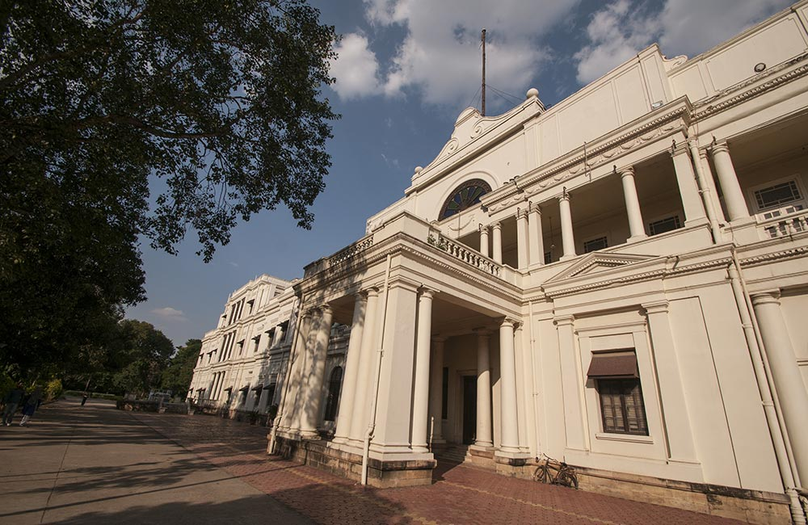
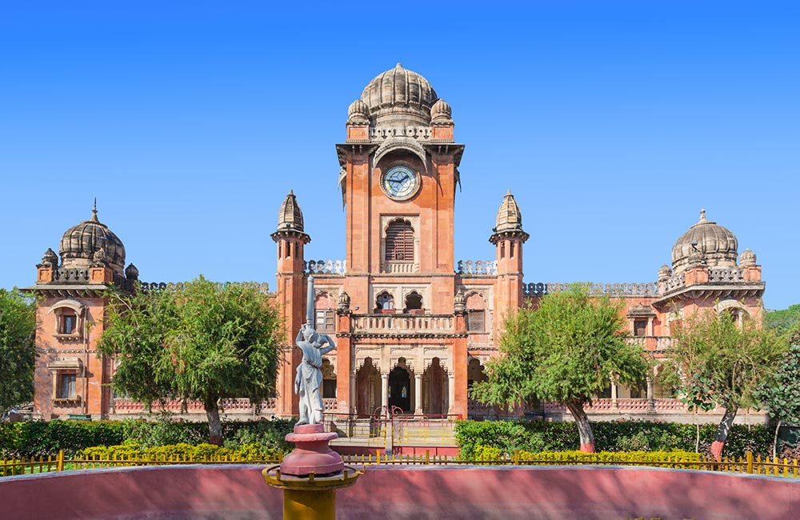
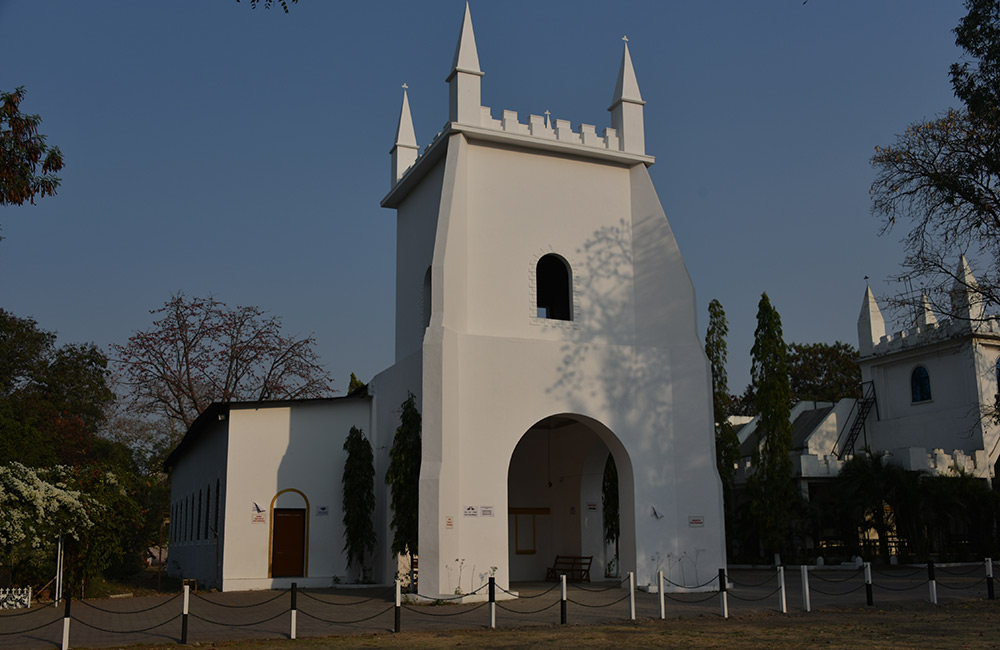

Built in the year 1766 by the rulers of the Holkar Dynasty, the grand Rajwada Palace is one of the top places to visit in Indore. This seven-storied palace, which exhibits a mix of Maratha, French, and Mughal architectural styles, is a fine example of royal splendor. The entrance of the palace features a grand archway and a huge wooden gate complete with iron studs. The main building comprises a courtyard, ornate balconies and windows, jharokas, elaborately carved wooden jalis, corridors, and galleried rooms.
An interesting feature of Rajwada Palace is that its top floors are made of wood while the lower three floors are carved out of stone. The palace is now a property maintained by the State Archeology Department which also runs a small souvenir shop within the building. The light and sound show held here in the evenings is a major attraction for visitors.
Timings:
10:00 am to 5:00 pm; closed on Mondays
Light and Sound Show Timings: Hindi show at 6:30 pm; English show at 7:45 pm
Location: Rajwada Circle
Entry Fee:
Indians: INR 10 per person
Foreigners: INR 250 per person
Light and Sound Show Tickets: ₹ 200 per person
Lal Bagh Palace, Indore

Another one of the prominent historical places in Indore is the Lal Bagh Palace, a grand building which once served as the residence of the Holkar rulers. Built in 1886-1921 by Maharaja Shivaji Rao, this beautiful three-storied edifice is located on the banks of Khan River. The building features a grand entrance, a garden of roses, regal artwork by Indian and Italian artists, and an exquisite ballroom. The ornate décor and interiors of Lal Bagh Palace, complete with beautiful wall carvings, chandeliers, rich carpets, and marble floors, will leave you awestruck.
Today, the palace is converted into a museum where you can see an interesting range of artifacts. Needless to say, a visit to this magnificent palace which spreads over 28 acres is one of the best things do in Indore.
Timings:
10:00 am to 5:00 pm; closed on Mondays
Location: Indira Nagar
Entry Fee:
Indians: INR 10 per person
Foreigners: INR 250 per person
Trivia:The main gates of Lal Bagh Palace are modeled just like the gates of Buckingham Palace in London.
Central Museum, Indore
The Central Museum, also known as Indore Museum, is where you can travel back in time and learn a thing or two about the region’s rich past. But that’s not all. The building also serves as one of the major historical places in Indore.
The museum was established during the colonial period, back in 1929, and features a fine collection of prehistoric objects, relics, coins, Parmar scriptures, medieval and pre-medieval Jain and Hindu scriptures, arms and armors, and others. A must-visit place for history buffs, it is one of the best museums in Indore.
Timings:
10:00 am to 5:00 pm; closed on Mondays and government holidays
Location: Navlakha
Entry Fee:
Indians: INR 10 per person
Foreigners: INR 100 per person
*Photography and videography are charged extra
Krishna Pura Chhatris, Indore
Another important historical place to visit in Indore is the Krishna Pura Chhatris, which comprises of three chhatris or cenotaphs. These structures house the remains of the deceased members of the Holkar Dynasty and hence are also called the Holkar Chaatris. Built in the 19th century over the place where these rulers were cremated, the place is named after Krishna Bhai Holkar, who was the wife of the famous military leader Yashwantrao Holkar.
Located on the banks of the River Khan or Kahn, these chhatris are a made of stones and also feature statues of soldiers, elaborate carvings of gods and goddesses on the exteriors, and a Krishna temple built for Maharani Krishna Bhai. Krishna Pura Chhatris are located a short walk away from Rajwada Palace, so you can cover both these monuments in one go.
Timings:
9:00 am to 5:00 pm;
Location: Mahatma Gandhi Road, Rajwada
Entry Fee:
Indians: Free
Foreigners: INR 100 per person
Gandhi Hall, Indore

When you make a list of places to visit in Indore, don’t forget to include the Gandhi Hall, the most prominent historical building in the city. Built in 1904, the building features the Indo-Gothic style of architecture. The clock tower, minarets, and domes of the structure add to its grand appeal.
The building was initially named King Edward Hall and was renamed as Gandhi Hall shortly after India’s independence. Currently, it serves as the town hall of Indore and many cultural and art exhibitions are held here.
Timings:
10:00 am to 6:00 pm;
Location: Mahatma Gandhi Road
Entry Fee:
Indians: Free
Foreigners: INR 100 per person
Trivia:Guess who inaugurated the Gandhi Hall back in 1905? None other than George V, the then Prince of Wales!
Indore White Church, Indore

It is no surprise that in cities that have a rich colonial legacy, churches often become sites of history. Indore is no exception to this and the White Church is a fine case in point. Counted among the top churches to visit in Indore, the building was built in 1858 as a place of worship for Protestants living in the city.
The church boasts of the European style of architecture and is called ‘White Church’ on account of the marble and milk white stones used in its construction. Other key features of the church include its red tiled roof, huge windows, and turrets.